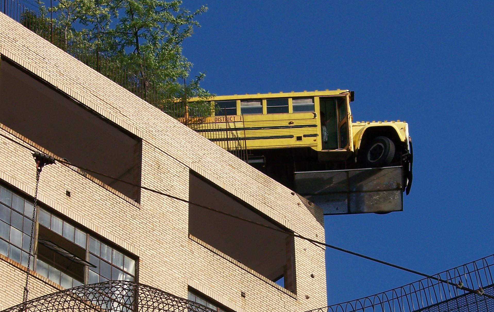

Art STL is currently a mobile-only site. For an optimal viewing experience, please re-open the site on a smartphone.
Art STL is currently a mobile-only site. For an optimal viewing experience, please re-open the site on a smartphone.
The next stop on our tour is the Apotheosis of St. Louis, one of the city's most recognizable symbols.
27' tall
Design by Charles H Niehaus
Completed in 1903
Made from bronze with a granite pedestal
From its iconic ledge in front of the museum, the statue
Read More
The 179-foot tower is made of rusticated limestone, buff-colored brick and terra
Read More
During the World’s Fair in 1904, as many as 5,000 people visited the tower and
Read More
Inside, spiral steps take visitors to the top of the tower where an observation
Read More
Next Up
School Bus
